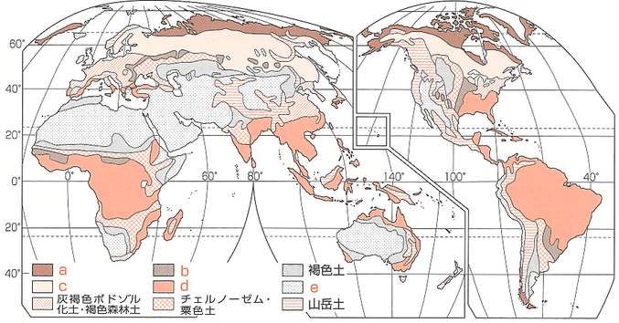
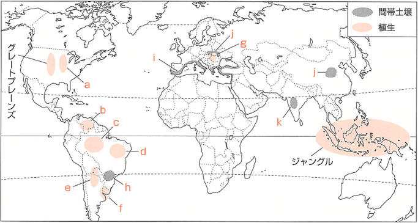

| 番号 | 問題 | 解答 |
|---|---|---|
| 1 | 幅の広い葉が1年中しげる、熱帯から温帯にかけて分布する樹木を何というか。 | 常緑広葉樹 |
| 2 | 冬季に葉を落として水分の蒸発を防ぐ広葉樹を何というか。 | 落葉広葉樹 |
| 3 | ユーラシア・北アメリカ大陸に広がる針葉樹林を何というか。 | タイガ |
| 4 | 1のうち、葉が固く夏の乾燥に強い樹林を何というか。 | 硬葉樹林 |
| 5 | 1のうち、保水力が高く夏の降水と冬の乾燥に対応した樹林を何というか。 | 照葉樹林 |
| 6 | 乾燥地域でみられる丈の低い草におおわれた平原を何というか。 | ステップ |
| 7 | 熱帯にみられる乾燥に強い樹林が点存する草丈の高い草原を何というか。 | サバナ |
| 8 | 高緯度地方などで低木と地衣類やコケ類などがみられる場所を何というか。 | ツンドラ |
| 9 | 高温多湿な熱帯でみられる多種類の1からなる森林を何というか。 | 熱帯雨林(多雨林) |
| 10 | 東南アジアやアフリカで、下草が密集し、見通しがきかない9を何というか。 | ジャングル |
| 11 | アマゾン川流域で多層の常緑樹でおおわれる9を何というか。 | セルバ |
| 12 | 気候や植生に密接に関係した性質をもち、広範囲に分布する土壌の総称を何というか。 | 成帯土壌 |
| 13 | 熱帯に分布する鉄分やアルミニウム分を多く含んだ赤色の酸性土壌を何というか。 | ラトソル |
| 14 | 肥沃な黒(色)土のうち、ウクライナからシベリアにみられる土壌を何というか。 | チェルノーゼム |
| 15 | 寒冷地域で腐食が進まず、土壌中の鉄分などが下方へ移動することによってできる酸性度の高い灰白色の土壌を何というか。 | ポドゾル |
| 16 | 12とは異なり、母岩の影響を強く受けてできた土壌の総称を何というか。 | 間帯土壌 |
| 17 | 地中海地方の石灰岩地域に分布する肥沃な赤色の16を何というか。 | テラロッサ |
| 18 | デカン高原に広がる綿花栽培が盛んで綿花土とも呼ばれる16を何というか。 | レグール |
| 19 | ブラジル高原南部に分布するコーヒー栽培に適している肥沃な16を何というか。 | テラローシャ |
| 20 | 氷河の末端や砂漠から風によって運ばれた細かい土が厚く堆積した土壌を何というか。 | レス |

